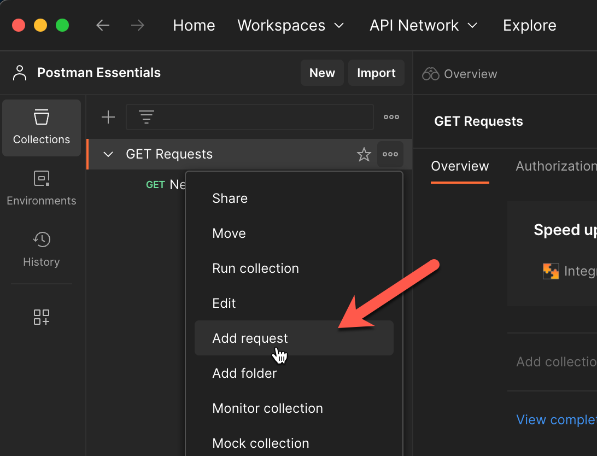
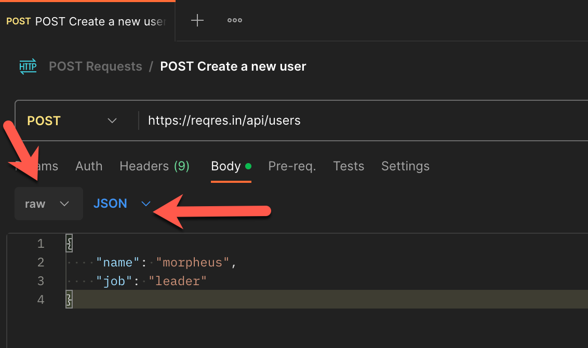

Postman
HTTP methods used in API requests
- GET: typically used to request data from a specified resource
- DELETE: typically used deletes the specified resource
- POST: typically used to send data to a server to create a resource
- PUT: typically used to send data to a server and update a resource, typically replacing the entire object.
-
PATCH: typically used to apply partial modifications to a resource, updating one or more elements within the object
- HEAD: typically uded to confirm if an endpoint exist or not
HTTP Responses
- Informational responses (100-199)
- Successful responses (200-299)
- Redirection messages (300-399)
- Client error responses (400-499)
- Server error responses (500-599)
Query parameters
- parameters are defined in the api structure and is a value added in the url ex: a category of products
Postman app
- Create Workspace with the name of the project that you are going to work
- Create collection (folder that contains a group of request)
- Create a request inside your collections

- For POST methods make sure that you have configured in the body section *raw and JSON

Postman collections options
- Export your collection as JS file and then share
- Create a link for sharing with API cloud (remember that current variables values are not going to be imported)
Collecions options
- Create folder inside a collection in order to have your collection organized

- In the run collection options you can set iterations and change the way of run (manually, schedule or via
cli)

- You can set your schedule hourly daily weekly and send notifications
Collections variables
- In the collections options you can store repeated values in variables, initial value it's for share with
your team and current will be your local value
Types of variables
- Local
- Data file in data section as JSON
- Environments
- Collections
- Global
We can refer this variables in:
- Test
- Pre-requests scripts
- Resquests with {{}}
How to SET variable in pre-request Script tab
- LOCAL -> pm.globals.set("variableName","variableValue")
- ENVIRONMENT -> pm.collectionVariables.set("variableName1","variableValue1")
- COLLECTION -> pm.environment.set("variableName2","variableValue2")
- GLOBAL -> pm.variables.set("variableName3","variableValue3")
How to GET variable tab
- LOCAL -> pm.globals.get("variableName")
- ENVIRONMENT -> pm.collectionVariables.get("variableName1")
- COLLECTION -> pm.environment.get("variableName2")
- GLOBAL -> pm.variables.get("variableName3")
- You can print in the value in console console.log (pm.variables.get("variableName3"))
How to UNSET a variable
- LOCAL -> pm.globals.unset("variableName")
- ENVIRONMENT -> pm.collectionVariables.unset("variableName1")
- COLLECTION -> pm.environment.unset("variableName2")
- GLOBAL -> pm.variables.unset("variableName3")
- Set & get variables in pre-request Script tab example
- Check the variables values in console
Environments
- You create environments when you want to save variables with differents to execute the requests
- You can duplicate variables from a environment to another and then change the values
- Make sure that you are changing the environment before run
Test
- You can add test validations in the request with JS, there are some snippets created that you can use
- You can see the result individually of the test in the test result tab
- You can see all the test result after run a collection
Handy scripts for debuggin
- console.clear() -> This clears all the logs in the console
- console.log("This is a log")
- console.info("This is a info")
- console.warn("this is a warning")
- console.error("this is an error")
how to use data with a json file
- Create a collection/foleder for external json data file
- create a json file with the data that you are going to use
- Run your collection/folder in the runner section and add the json file
- Create a variable for each data header
- Run your collection
- As you can see in the console you can see more information and the response body
Handy validations for variables in a request (make sure that the variable or values is on the request)
Authentication
- You can create variables for authentication token and save it in collections, folders and requests level
- You can use the token variable in the authentication field
How to automatize a token response in a variable
- Create a request that gets the token
- Set a global variable in the test tab that store the response
- Use the global variable in the header that needs authorization